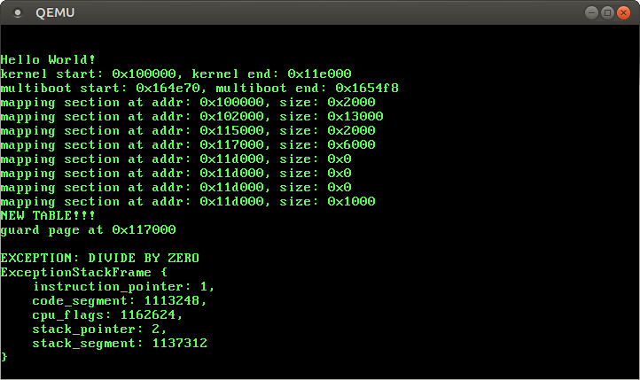
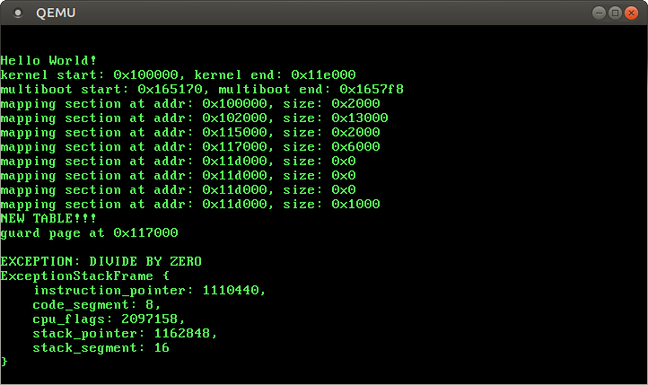
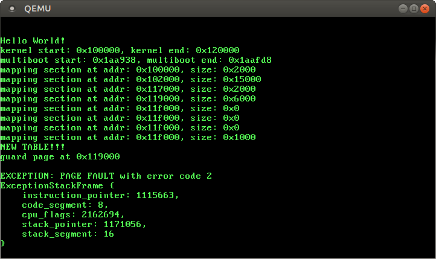
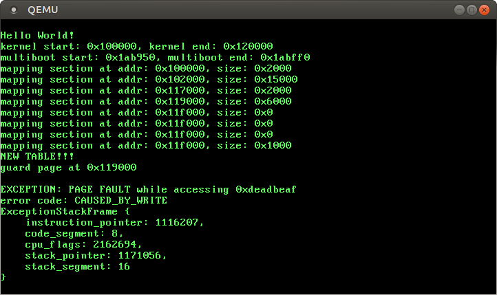

Looking forward to the next post! Thanks for all your hard work on this, this tutorial series is incredibly enlightening.
Better Exception Messages
No longer updated! You are viewing the a post of the first edition of “Writing an OS in Rust”, which is no longer updated. You can find the second edition here.
In this post, we explore exceptions in more detail. Our goal is to print additional information when an exception occurs, for example the values of the instruction and stack pointer. In the course of this, we will explore inline assembly and naked functions. We will also add a handler function for page faults and read the associated error code.
As always, the complete source code is on GitHub. Please file issues for any problems, questions, or improvement suggestions. There is also a gitter chat and a comment section at the end of this page.
Note: This post describes how to handle exceptions using naked functions (see “Handling Exceptions with Naked Functions” for an overview). Our new way of handling exceptions can be found in the “Handling Exceptions” post.
🔗Exceptions in Detail
An exception signals that something is wrong with the currently-executed instruction. Whenever an exception occurs, the CPU interrupts its current work and starts an internal exception routine.
This routine involves reading the interrupt descriptor table and invoking the registered handler function. But first, the CPU pushes various information onto the stack, which describe the current state and provide information about the cause of the exception:

The pushed information contain the instruction and stack pointer, the current CPU flags, and (for some exceptions) an error code, which contains further information about the cause of the exception. Let’s look at the fields in detail:
- First, the CPU aligns the stack pointer on a 16-byte boundary. This allows the handler function to use SSE instructions, which partly expect such an alignment.
- After that, the CPU pushes the stack segment descriptor (SS) and the old stack pointer (from before the alignment) onto the stack. This allows us to restore the previous stack pointer when we want to resume the interrupted program.
- Then the CPU pushes the contents of the RFLAGS register. This register contains various state information of the interrupted program. For example, it indicates if interrupts were enabled and whether the last executed instruction returned zero.
- Next the CPU pushes the instruction pointer and its code segment descriptor onto the stack. This tells us the address of the last executed instruction, which caused the exception.
- Finally, the CPU pushes an error code for some exceptions. This error code only exists for exceptions such as page faults or general protection faults and provides additional information. For example, it tells us whether a page fault was caused by a read or a write request.
🔗Printing the Exception Stack Frame
Let’s create a struct that represents the exception stack frame:
// in src/interrupts/mod.rs
#[derive(Debug)]
#[repr(C)]
struct ExceptionStackFrame {
instruction_pointer: u64,
code_segment: u64,
cpu_flags: u64,
stack_pointer: u64,
stack_segment: u64,
}
The divide-by-zero fault pushes no error code, so we leave it out for now. Note that the stack grows downwards in memory, so we need to declare the fields in reverse order (compared to the figure above).
Now we need a way to find the memory address of this stack frame. When we look at the above graphic again, we see that the start address of the exception stack frame is the new stack pointer. So we just need to read the value of rsp at the very beginning of our handler function:
// in src/interrupts/mod.rs
extern "C" fn divide_by_zero_handler() -> ! {
let stack_frame: &ExceptionStackFrame;
unsafe {
asm!("mov $0, rsp" : "=r"(stack_frame) ::: "intel");
}
println!("\nEXCEPTION: DIVIDE BY ZERO\n{:#?}", stack_frame);
loop {}
}
We’re using inline assembly here to load the value from the rsp register into stack_frame. The syntax is a bit strange, so here’s a quick explanation:
- The
asm!macro emits raw assembly instructions. This is the only way to read raw register values in Rust. - We insert a single assembly instruction:
mov $0, rsp. It moves the value ofrspto some register (the$0is a placeholder for an arbitrary register, which gets filled by the compiler). - The colons are separators. After the first colon, the
asm!macro expects output operands. We’re specifying ourstack_framevariable as a single output operand here. The=rtells the compiler that it should use any register for the first placeholder$0. - After the second colon, we can specify input operands. We don’t need any, therefore we leave it empty.
- After the third colon, the macro expects so called clobbers. We don’t change any register values, so we leave it empty too.
- The last block (after the 4th colon) specifies options. The
inteloption tells the compiler that our code is in Intel assembly syntax (instead of the default AT&T syntax).
So the inline assembly loads the stack pointer value to stack_frame at the very beginning of our function. Thus we have a pointer to the exception stack frame and are able to pretty-print its Debug formatting through the {:#?} argument.
🔗Testing it
Let’s try it by executing make run:

Those ExceptionStackFrame values look very wrong. The instruction pointer definitely shouldn’t be 1 and the code segment should be 0x8 instead of some big number. So what’s going on here?
🔗Debugging
It seems like we somehow got the pointer wrong. The ExceptionStackFrame type and our inline assembly seem correct, so something must be modifying rsp before we load it into stack_frame.
Let’s see what’s happening by looking at the disassembly of our function:
> objdump -d build/kernel-x86_64.bin | grep -A20 "divide_by_zero_handler"
[...]
000000000010ced0 <_ZN7blog_os10interrupts22divide_by_zero_handler17h62189e8E>:
10ced0: 55 push %rbp
10ced1: 48 89 e5 mov %rsp,%rbp
10ced4: 48 81 ec b0 00 00 00 sub $0xb0,%rsp
10cedb: 48 8d 45 98 lea -0x68(%rbp),%rax
10cedf: 48 b9 1d 1d 1d 1d 1d movabs $0x1d1d1d1d1d1d1d1d,%rcx
10cee6: 1d 1d 1d
10cee9: 48 89 4d 98 mov %rcx,-0x68(%rbp)
10ceed: 48 89 4d f8 mov %rcx,-0x8(%rbp)
10cef1: 48 89 e1 mov %rsp,%rcx
10cef4: 48 89 4d f8 mov %rcx,-0x8(%rbp)
10cef8: ...
[...]
Our divide_by_zero_handler starts at address 0x10ced0. Let’s look at the instruction at address 0x10cef1:
mov %rsp,%rcx
This is our inline assembly instruction, which loads the stack pointer into the stack_frame variable. It just looks a bit different, since it’s in AT&T syntax and contains rcx instead of our $0 placeholder. It moves rsp to rcx, and then the next instruction (mov %rcx,-0x8(%rbp)) moves rcx to the variable on the stack.
We can clearly see the problem here: The compiler inserted various other instructions before our inline assembly. These instructions modify the stack pointer so that we don’t read the original rsp value and get a wrong pointer. But why is the compiler doing this?
The reason is that we need some place on the stack to store things like variables. Therefore the compiler inserts a so-called function prologue, which prepares the stack and reserves space for all variables. In our case, the compiler subtracts from the stack pointer to make room for i.a. our stack_frame variable. This prologue is the first thing in every function and comes before every other code.
So in order to correctly load the exception frame pointer, we need some way to circumvent the automatic prologue generation.
🔗Naked Functions
Fortunately there is a way to disable the prologue: naked functions. A naked function has no prologue and immediately starts with the first instruction of its body. However, most Rust code requires the prologue. Therefore naked functions should only contain inline assembly.
A naked function looks like this (note the #[naked] attribute):
#[naked]
extern "C" fn naked_function_example() {
unsafe {
asm!("mov rax, 0x42" ::: "rax" : "intel");
};
}
Naked functions are highly unstable, so we need to add #![feature(naked_functions)] to our src/lib.rs.
If you want to try it, insert it in src/lib.rs and call it from rust_main. When we inspect the disassembly, we see that the function prologue is missing:
> objdump -d build/kernel-x86_64.bin | grep -A5 "naked_function_example"
[...]
000000000010df90 <_ZN7blog_os22naked_function_example17ha9f733dfe42b595dE>:
10df90: 48 c7 c0 2a 00 00 00 mov $0x42,%rax
10df97: c3 retq
10df98: 0f 1f 84 00 00 00 00 nopl 0x0(%rax,%rax,1)
10df9f: 00
It contains just the specified inline assembly and a return instruction (you can ignore the junk values after the return statement). So let’s try to use a naked function to retrieve the exception frame pointer.
🔗A Naked Exception Handler
We can’t use Rust code in naked functions, but we still want to use Rust in our exception handler. Therefore we split our handler function in two parts. A main exception handler in Rust and a small naked wrapper function, which just loads the exception frame pointer and then calls the main handler.
Our new two-stage exception handler looks like this:
// in src/interrupts/mod.rs
#[naked]
extern "C" fn divide_by_zero_wrapper() -> ! {
unsafe {
asm!(/* load exception frame pointer and call main handler */);
}
}
extern "C" fn divide_by_zero_handler(stack_frame: &ExceptionStackFrame)
-> !
{
println!("\nEXCEPTION: DIVIDE BY ZERO\n{:#?}",
unsafe { &*stack_frame });
loop {}
}
The naked wrapper function retrieves the exception stack frame pointer and then calls the divide_by_zero_handler with the pointer as argument. We can’t use Rust code in naked functions, so we need to do both things in inline assembly.
Retrieving the pointer to the exception stack frame is easy: We just need to load it from the rsp register. Our wrapper function has no prologue (it’s naked), so we can be sure that nothing modifies the register before.
Calling the main handler is a bit more complicated, since we need to pass the argument correctly. Our main handler uses the C calling convention, which specifies that the the first argument is passed in the rdi register. So we need to load the pointer value into rdi and then use the call instruction to call divide_by_zero_handler.
Translated to assembly, it looks like this:
mov rdi, rsp
call divide_by_zero_handler
It moves the exception stack frame pointer from rsp to rdi, where the first argument is expected, and then calls the main handler. Let’s create the corresponding inline assembly to complete our wrapper function:
#[naked]
extern "C" fn divide_by_zero_wrapper() -> ! {
unsafe {
asm!("mov rdi, rsp; call $0"
:: "i"(divide_by_zero_handler as extern "C" fn(_) -> !)
: "rdi" : "intel");
}
}
Instead of call divide_by_zero_handler, we use a placeholder again. The reason is Rust’s name mangling, which changes the name of the divide_by_zero_handler function. To circumvent this, we pass a function pointer as input parameter (after the second colon). The "i" tells the compiler that it is an immediate value, which can be directly inserted for the placeholder. We also specify a clobber after the third colon, which tells the compiler that we change the value of the rdi register.
🔗Intrinsics::Unreachable
When we try to compile it, we get the following error:
error: computation may converge in a function marked as diverging
--> src/interrupts/mod.rs:23:1
|>
23 |> extern "C" fn divide_by_zero_wrapper() -> ! {
|> ^
The reason is that we marked our divide_by_zero_wrapper function as diverging (the !). We call another diverging function in inline assembly, so it is clear that the function diverges. However, the Rust compiler doesn’t understand inline assembly, so it doesn’t know that. To fix this, we tell the compiler that all code after the asm! macro is unreachable:
#[naked]
extern "C" fn divide_by_zero_wrapper() -> ! {
unsafe {
asm!("mov rdi, rsp; call $0"
:: "i"(divide_by_zero_handler as extern "C" fn(_) -> !)
: "rdi" : "intel");
::core::intrinsics::unreachable();
}
}
The intrinsics::unreachable function is unstable, so we need to add #![feature(core_intrinsics)] to our src/lib.rs. It is just an annotation for the compiler and produces no real code. (Not to be confused with the unreachable! macro, which is completely different!)
🔗It works!
The last step is to update the interrupt descriptor table (IDT) to use our new wrapper function:
// in src/interrupts/mod.rs
lazy_static! {
static ref IDT: idt::Idt = {
let mut idt = idt::Idt::new();
idt.set_handler(0, divide_by_zero_wrapper); // changed
idt
};
}
Now we see a correct exception stack frame when we execute make run:

🔗Testing on real Hardware
Virtual machines such as QEMU are very convenient to quickly test our kernel. However, they might behave a bit different than real hardware in some situations. So we should test our kernel on real hardware, too.
Let’s do it by burning it to an USB stick:
> sudo dd if=build/os-x86_64.iso of=/dev/sdX; and sync
Replace sdX by the device name of your USB stick. But be careful! The command will erase everything on that device.
Now we should be able to boot from this USB stick. When we do it, we see that it works fine on real hardware, too. Great!
However, this section wouldn’t exist if there weren’t a problem. To trigger this problem, we add some example code to the start of our divide_by_zero_handler:
// in src/interrupts/mod.rs
extern "C" fn divide_by_zero_handler(...) {
let x = (1u64, 2u64, 3u64);
let y = Some(x);
for i in (0..100).map(|z| (z, z - 1)) {}
println!(...);
loop {}
}
This is just some garbage code that doesn’t do anything useful. When we try it in QEMU using make run, it still works fine. However, when we burn it to an USB stick again and boot from it on real hardware, we see that our computer reboots just before printing the exception message.
So our code, which worked well in QEMU, causes a triple fault on real hardware. What’s happening?
🔗Reproducing the Bug in QEMU
Debugging on a real machine is difficult. Fortunately there is a way to reproduce this bug in QEMU: We use Linux’s Kernel-based Virtual Machine (KVM) by passing the ‑enable-kvm flag:
> qemu-system-x86_64 -cdrom build/os-x86_64.iso -enable-kvm
Now QEMU triple faults as well. This should make debugging much easier.
🔗Debugging
QEMU’s -d int, which prints every exception, doesn’t seem to work in KVM mode. However -d cpu_reset still works. It prints the complete CPU state whenever the CPU resets. Let’s try it:
> qemu-system-x86_64 -cdrom build/os-x86_64.iso -enable-kvm -d cpu_reset
CPU Reset (CPU 0)
EAX=00000000 EBX=00000000 ECX=00000000 EDX=00000000
ESI=00000000 EDI=00000000 EBP=00000000 ESP=00000000
EIP=00000000 EFL=00000000 [-------] CPL=0 II=0 A20=0 SMM=0 HLT=0
[...]
CPU Reset (CPU 0)
EAX=00000000 EBX=00000000 ECX=00000000 EDX=00000663
ESI=00000000 EDI=00000000 EBP=00000000 ESP=00000000
EIP=0000fff0 EFL=00000002 [-------] CPL=0 II=0 A20=1 SMM=0 HLT=0
[...]
CPU Reset (CPU 0)
RAX=0000000000118cb8 RBX=0000000000000800 RCX=1d1d1d1d1d1d1d1d RDX=0..0000000
RSI=0000000000112cd0 RDI=0000000000118d38 RBP=0000000000118d28 RSP=0..0118c68
R8 =0000000000000000 R9 =0000000000000100 R10=0000000000118700 R11=0..0118a00
R12=0000000000000000 R13=0000000000000000 R14=0000000000000000 R15=0..0000000
RIP=000000000010cf08 RFL=00210002 [-------] CPL=0 II=0 A20=1 SMM=0 HLT=0
[...]
The first two resets occur while the CPU is still in 32-bit mode (EAX instead of RAX), so we ignore them. The third reset is the interesting one, because it occurs in 64-bit mode. The register dump tells us that the instruction pointer (rip) was 0x10cf08 just before the reset. This might be the address of the instruction that caused the triple fault.
We can find the corresponding instruction by disassembling our kernel:
objdump -d build/kernel-x86_64.bin | grep "10cf08:"
10cf08: 0f 29 45 b0 movaps %xmm0,-0x50(%rbp)
The movaps instruction is an SSE instruction that moves aligned 128bit values. It can fail for a number of reasons:
- For an illegal memory operand effective address in the CS, DS, ES, FS or GS segments.
- For an illegal address in the SS segment.
- If a memory operand is not aligned on a 16-byte boundary.
- For a page fault.
- If TS in CR0 is set.
The segment registers contain no meaningful values in long mode, so they can’t contain illegal addresses. We did not change the TS bit in CR0 and there is no reason for a page fault either. So it has to be option 3.
🔗16-byte Alignment
Some SSE instructions such as movaps require that memory operands are 16-byte aligned. In our case, the instruction is movaps %xmm0,-0x50(%rbp), which writes to address rbp - 0x50. Therefore rbp needs to be 16-byte aligned.
Let’s look at the above -d cpu_reset dump again and check the value of rbp:
CPU Reset (CPU 0)
RAX=[...] RBX=[...] RCX=[...] RDX=[...]
RSI=[...] RDI=[...] RBP=0000000000118d28 RSP=[...]
...
RBP is 0x118d28, which is not 16-byte aligned. So this is the reason for the triple fault. (It seems like QEMU doesn’t check the alignment for movaps, but real hardware of course does.)
But how did we end up with a misaligned rbp register?
🔗The Base Pointer
In order to solve this mystery, we need to look at the disassembly of the preceding code:
> objdump -d build/kernel-x86_64.bin | grep -B10 "10cf08:"
000000000010cee0 <_ZN7blog_os10interrupts22divide_by_zero_handler17hE>:
10cee0: 55 push %rbp
10cee1: 48 89 e5 mov %rsp,%rbp
10cee4: 48 81 ec c0 00 00 00 sub $0xc0,%rsp
10ceeb: 48 8d 45 90 lea -0x70(%rbp),%rax
10ceef: 48 b9 1d 1d 1d 1d 1d movabs $0x1d1d1d1d1d1d1d1d,%rcx
10cef6: 1d 1d 1d
10cef9: 48 89 4d 90 mov %rcx,-0x70(%rbp)
10cefd: 48 89 7d f8 mov %rdi,-0x8(%rbp)
10cf01: 0f 10 05 a8 51 00 00 movups 0x51a8(%rip),%xmm0
10cf08: 0f 29 45 b0 movaps %xmm0,-0x50(%rbp)
At the last line we have the movaps instruction, which caused the triple fault. The exception occurs inside our divide_by_zero_handler function. We see that rbp is loaded with the value of rsp at the beginning (at 0x10cee1). The rbp register holds the so-called base pointer, which points to the beginning of the stack frame. It is used in the rest of the function to address variables and other values on the stack.
The base pointer is initialized directly from the stack pointer (rsp) after pushing the old base pointer. There is no special alignment code, so the compiler blindly assumes that (rsp - 8)1 is always 16-byte aligned. This seems to be wrong in our case. But why does the compiler assume this?
1
By pushing the old base pointer, rsp is updated to rsp-8.
🔗Calling Conventions
The reason is that our exception handler is defined as extern "C" function, which specifies that it’s using the C calling convention. On x86_64 Linux, the C calling convention is specified by the System V AMD64 ABI (PDF). Section 3.2.2 defines the following:
The end of the input argument area shall be aligned on a 16 byte boundary. In other words, the value (%rsp + 8) is always a multiple of 16 when control is transferred to the function entry point.
The “end of the input argument area” refers to the last stack-passed argument (in our case there aren’t any). So the stack pointer must be 16 byte aligned whenever we call a C-compatible function. The call instruction then pushes the return value on the stack so that “the value (%rsp + 8) is a multiple of 16 when control is transferred to the function entry point”.
Summary: The calling convention requires a 16 byte aligned stack pointer before call instructions. The compiler relies on this requirement, but we broke it somehow. Thus the generated code triple faults due to a misaligned memory address in the movaps instruction.
🔗Fixing the Alignment
In order to fix this bug, we need to make sure that the stack pointer is correctly aligned before calling extern "C" functions. Let’s summarize the stack pointer modifications that occur before the exception handler is called:
- The CPU aligns the stack pointer to a 16 byte boundary.
- The CPU pushes
ss,rsp,rflags,cs, andrip. So it pushes five 8 byte registers, which makesrspmisaligned. - The wrapper function calls
divide_by_zero_handlerwith a misaligned stack pointer.
The problem is that we’re pushing an uneven number of 8 byte registers. Thus we need to align the stack pointer again before the call instruction:
#[naked]
extern "C" fn divide_by_zero_wrapper() -> ! {
unsafe {
asm!("mov rdi, rsp
sub rsp, 8 // align the stack pointer
call $0"
:: "i"(divide_by_zero_handler as extern "C" fn(_) -> !)
: "rdi" : "intel");
::core::intrinsics::unreachable();
}
}
The additional sub rsp, 8 instruction aligns the stack pointer to a 16 byte boundary. Now it should work on real hardware (and in QEMU KVM mode) again.
🔗A Handler Macro
The next step is to add handlers for other exceptions. However, we would need wrapper functions for them too. To avoid this code duplication, we create a handler macro that creates the wrapper functions for us:
// in src/interrupts/mod.rs
macro_rules! handler {
($name: ident) => {{
#[naked]
extern "C" fn wrapper() -> ! {
unsafe {
asm!("mov rdi, rsp
sub rsp, 8 // align the stack pointer
call $0"
:: "i"($name as extern "C" fn(
&ExceptionStackFrame) -> !)
: "rdi" : "intel");
::core::intrinsics::unreachable();
}
}
wrapper
}}
}
The macro takes a single Rust identifier (ident) as argument and expands to a {} block (hence the double braces). The block defines a new wrapper function that calls the function $name and passes a pointer to the exception stack frame. Note that we’re fixing the argument type to &ExceptionStackFrame. If we used a _ like before, the passed function could accept an arbitrary argument, which would lead to ugly bugs at runtime.
Now we can remove the divide_by_zero_wrapper and use our new handler! macro instead:
// in src/interrupts/mod.rs
lazy_static! {
static ref IDT: idt::Idt = {
let mut idt = idt::Idt::new();
idt.set_handler(0, handler!(divide_by_zero_handler)); // new
idt
};
}
Note that the handler! macro needs to be defined above the static IDT, because macros are only available after their definition.
🔗Invalid Opcode Exception
With the handler! macro we can create new handler functions easily. For example, we can add a handler for the invalid opcode exception as follows:
// in src/interrupts/mod.rs
lazy_static! {
static ref IDT: idt::Idt = {
let mut idt = idt::Idt::new();
idt.set_handler(0, handler!(divide_by_zero_handler));
idt.set_handler(6, handler!(invalid_opcode_handler)); // new
idt
};
}
extern "C" fn invalid_opcode_handler(stack_frame: &ExceptionStackFrame)
-> !
{
let stack_frame = unsafe { &*stack_frame };
println!("\nEXCEPTION: INVALID OPCODE at {:#x}\n{:#?}",
stack_frame.instruction_pointer, stack_frame);
loop {}
}
Invalid opcode faults have the vector number 6, so we set the 6th IDT entry. This time we additionally print the address of the invalid instruction.
We can test our new handler with the special ud2 instruction, which generates a invalid opcode:
// in src/lib.rs
#[no_mangle]
pub extern "C" fn rust_main(multiboot_information_address: usize) {
...
// initialize our IDT
interrupts::init();
// provoke a invalid opcode exception
unsafe { asm!("ud2") };
println!("It did not crash!");
loop {}
}
🔗Exceptions with Error Codes
When a divide-by-zero exception occurs, we immediately know the reason: Someone tried to divide by zero. In contrast, there are faults with many possible causes. For example, a page fault occurs in many occasions: When accessing a non-present page, when writing to a read-only page, when the page table is malformed, etc. In order to differentiate these causes, the CPU pushes an additional error code onto the stack for such exceptions, which gives additional information.
🔗A new Macro
Since the CPU pushes an additional error code, the stack frame is different and our handler! macro is not applicable. Therefore we create a new handler_with_error_code! macro for them:
// in src/interrupts/mod.rs
macro_rules! handler_with_error_code {
($name: ident) => {{
#[naked]
extern "C" fn wrapper() -> ! {
unsafe {
asm!("pop rsi // pop error code into rsi
mov rdi, rsp
sub rsp, 8 // align the stack pointer
call $0"
:: "i"($name as extern "C" fn(
&ExceptionStackFrame, u64) -> !)
: "rdi","rsi" : "intel");
::core::intrinsics::unreachable();
}
}
wrapper
}}
}
The difference to the handler! macro is the additional error code argument. The CPU pushes the error code last, so we pop it right at the beginning of the wrapper function. We pop it into rsi because the C calling convention expects the second argument in it.
🔗A Page Fault Handler
Let’s write a page fault handler which analyzes and prints the error code:
// in src/interrupts/mod.rs
extern "C" fn page_fault_handler(stack_frame: &ExceptionStackFrame,
error_code: u64) -> !
{
println!(
"\nEXCEPTION: PAGE FAULT with error code {:?}\n{:#?}",
error_code, unsafe { &*stack_frame });
loop {}
}
We need to register our new handler function in the static interrupt descriptor table (IDT):
// in src/interrupts/mod.rs
lazy_static! {
static ref IDT: idt::Idt = {
let mut idt = idt::Idt::new();
idt.set_handler(0, handler!(divide_by_zero_handler));
idt.set_handler(6, handler!(invalid_opcode_handler));
// new
idt.set_handler(14, handler_with_error_code!(page_fault_handler));
idt
};
}
Page faults have the vector number 14, so we set the 14th IDT entry.
🔗Testing it
Let’s test our new page fault handler by provoking a page fault in our main function:
// in src/lib.rs
#[no_mangle]
pub extern "C" fn rust_main(multiboot_information_address: usize) {
...
// initialize our IDT
interrupts::init();
// provoke a page fault
unsafe { *(0xdeadbeaf as *mut u64) = 42 };
println!("It did not crash!");
loop {}
}
We get the following output:

🔗The Page Fault Error Code
“Error code 2” is not really an useful error message. Let’s improve this by creating a PageFaultErrorCode type:
// in src/interrupts/mod.rs
bitflags! {
struct PageFaultErrorCode: u64 {
const PROTECTION_VIOLATION = 1 << 0;
const CAUSED_BY_WRITE = 1 << 1;
const USER_MODE = 1 << 2;
const MALFORMED_TABLE = 1 << 3;
const INSTRUCTION_FETCH = 1 << 4;
}
}
- When the
PROTECTION_VIOLATIONflag is set, the page fault was caused e.g. by a write to a read-only page. If it’s not set, it was caused by accessing a non-present page. - The
CAUSED_BY_WRITEflag specifies if the fault was caused by a write (if set) or a read (if not set). - The
USER_MODEflag is set when the fault occurred in non-privileged mode. - The
MALFORMED_TABLEflag is set when the page table entry has a 1 in a reserved field. - When the
INSTRUCTION_FETCHflag is set, the page fault occurred while fetching the next instruction.
Now we can improve our page fault error message by using the new PageFaultErrorCode. We also print the accessed memory address:
extern "C" fn page_fault_handler(stack_frame: &ExceptionStackFrame,
error_code: u64) -> !
{
use x86_64::registers::control_regs;
println!(
"\nEXCEPTION: PAGE FAULT while accessing {:#x}\
\nerror code: {:?}\n{:#?}",
unsafe { control_regs::cr2() },
PageFaultErrorCode::from_bits(error_code).unwrap(),
unsafe { &*stack_frame });
loop {}
}
The from_bits function tries to convert the u64 into a PageFaultErrorCode. We use unwrap to panic if the error code has invalid bits set, since this indicates an error in our PageFaultErrorCode definition or a stack corruption. We also print the contents of the cr2 register. It contains the accessed memory address, which was the cause of the page fault.
Now we get a useful error message when a page fault occurs, which allows us to debug it more easily:

As expected, the page fault was caused by write to 0xdeadbeaf. The PROTECTION_VIOLATION flag is not set, so the accessed page was not present.
🔗What’s next?
Now we’re able to catch and analyze various exceptions. The next step is to resolve exceptions, if possible. An example is demand paging: The OS swaps out memory pages to disk so that a page fault occurs when the page is accessed the next time. In that case, the OS can resolve the exception by bringing the page back into memory. Afterwards, the OS resumes the interrupted program as if nothing had happened.
The next post will implement the first portion of demand paging: saving and restoring the complete state of an program. This will allow us to transparently interrupt and resume programs in the future.
Yay ! New post !
I'm so impatient to read the next one ^^
Thank you a lot for what you're doing :)
You're welcome :). I plan to start writing on the next one in the next few days, but I can't promise anything.
Oh so there will be no need to wait for months before the next post ?
Great !
I hope so ;).
Some news about the next post ? :D
The last weeks were quite busy, so I couldn't write on it much. I hope that I can find some time on the weekend.